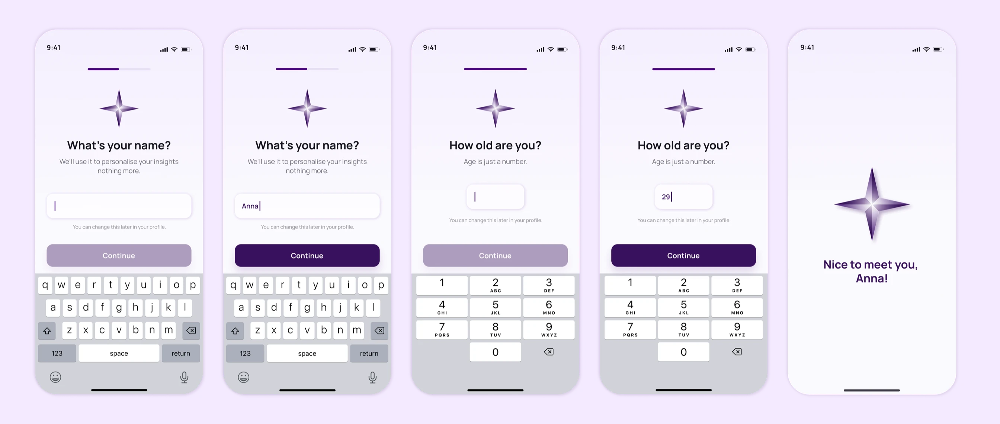

Context
The MVP had to test a product hypothesis: people are willing to share personal health data if they immediately understand why it's needed and what they get back. The stakes are high — with sensitive data, a single extra question or an unclear step is enough for the user to close the app and not come back.
Design challenge
I had to connect two sensitive scenarios — health data consent and profile collection — with a useful result: a clear review of lab markers. At the same time, the flow had to stay short, calm and look complete enough for an MVP presentation.

My role
I designed the MVP flow from the first touch to results review: the value promise, consent, health-profile collection, form states, progress, goal selection and the visual logic of the marker cards. The focus was on making the product feel whole enough for a first hypothesis check without trying to solve everything at once.
Goals
- Build the first MVP scenario: from value proposition to reviewing lab results
- Show users the value before requesting sensitive health data
- Break the profile into short steps with clear progress and skip
- Design the states for consent, input, selected options and biomarker cards
Solution
The MVP starts with a simple promise: Alwa helps explain every marker, build a personal plan, find a lab and prepare for a doctor's visit. Only after that does the user reach the consent screen.

Name and age are split into short screens with clear progress, the right keyboard type and a disabled/active CTA. After input, the product gives a small personal response instead of just pushing further through the form.

The next block explains that the profile is needed for more accurate reference ranges and lifestyle-aware recommendations. The questions are split into separate steps: biological sex, height, weight, activity, smoking, alcohol and menstrual cycle.

Chronic conditions, nervous-system symptoms and hormonal symptoms are grouped into chip-based screens with multiple choice. Selected items instantly get a contrast fill and a check-mark, and the final screen closes the profile with a clear “done” state.

Outcome
- The user sees value before giving data: the MVP opens with the product's promise, not a form — so consent reads as an exchange, not a barrier.
- The app asks only for what it needs: age, body metrics, lifestyle and symptoms are collected in short steps that immediately explain why.
- The numbers become clear without breaking trust: marker cards show status and reference range and honestly warn that conclusions rely only on confirmed data.